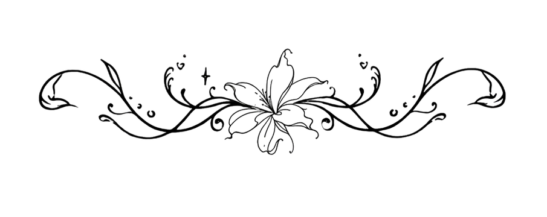
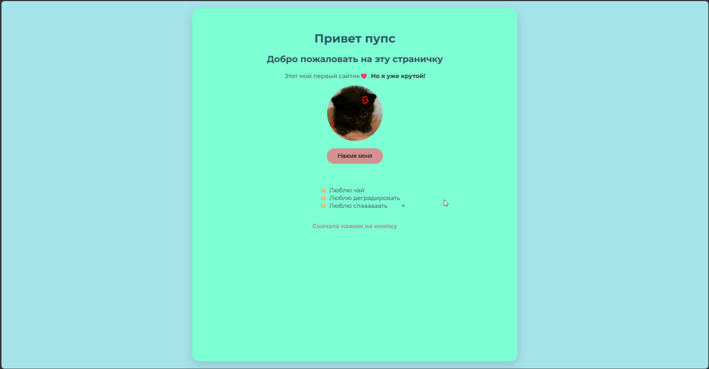

Привет, я Aiko
Изучаю верстку сайтов и делаю свои первые проекты.
Изучаю верстку сайтов и делаю свои первые проекты.

Привет! Я Aiko, студент и начинающий веб-разработчик. Я не строю жестких планов на 10 лет вперед, вместо этого я фокусируюсь на качестве каждого дня. Для меня обучение коду — это такая же естественная привычка, как и мои регулярные домашние тренировки. Я верю, что маленькие, но ежедневные шаги приводят к крутым результатам. Сейчас я углубляюсь в HTML и CSS, чтобы создавать чистые, удобные и эстетичные сайты.

Сайт кнопкаМой первый сайт. Верстал на HTML и CSS, немного работал с JS (пока только изучаю).